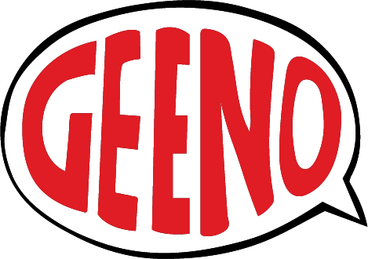

Hi, i’m Luigi Iannelli, i’m a freelance artist from Italy.
I’m currently living in Naples, Italy, where i graduated from International school of comics in 2020.
My interests range between comic books and concept art to poster design and photomanipulation.
Being obviousely a bit of a geek my other interests include tv series, gaming and musical theater.